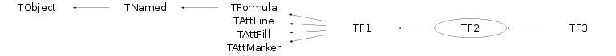

Function Members (Methods)
public:
| TF2() | |
| TF2(const TF2& f2) | |
| TF2(const char* name, const char* formula, Double_t xmin = 0, Double_t xmax = 1, Double_t ymin = 0, Double_t ymax = 1) | |
| TF2(const char* name, void* fcn, Double_t xmin = 0, Double_t xmax = 1, Double_t ymin = 0, Double_t ymax = 1, Int_t npar = 0) | |
| TF2(const char* name, ROOT::Math::ParamFunctor f, Double_t xmin = 0, Double_t xmax = 1, Double_t ymin = 0, Double_t ymax = 1, Int_t npar = 0) | |
| TF2(const char* name, void* ptr, Double_t xmin, Double_t xmax, Double_t ymin, Double_t ymax, Int_t npar, const char* className) | |
| TF2(const char* name, void* ptr, void*, Double_t xmin, Double_t xmax, Double_t ymin, Double_t ymax, Int_t npar, const char* className, const char* methodName = 0) | |
| virtual | ~TF2() |
| void | TObject::AbstractMethod(const char* method) const |
| static void | TF1::AbsValue(Bool_t reject = kTRUE) |
| virtual void | TFormula::Analyze(const char* schain, Int_t& err, Int_t offset = 0) |
| virtual Bool_t | TFormula::AnalyzeFunction(TString& chaine, Int_t& err, Int_t offset = 0) |
| virtual void | TObject::AppendPad(Option_t* option = "") |
| virtual void | TF1::Browse(TBrowser* b) |
| static void | TF1::CalcGaussLegendreSamplingPoints(Int_t num, Double_t* x, Double_t* w, Double_t eps = 3.0e-11) |
| virtual Double_t | TF1::CentralMoment(Double_t n, Double_t a, Double_t b, const Double_t* params = 0, Double_t epsilon = 0.000001) |
| virtual Double_t | CentralMoment2(Double_t nx, Double_t ax, Double_t bx, Double_t ny, Double_t ay, Double_t by, Double_t epsilon = 0.000001) |
| static TClass* | Class() |
| virtual const char* | TObject::ClassName() const |
| virtual void | TFormula::Clear(Option_t* option = "") |
| virtual TObject* | TNamed::Clone(const char* newname = "") const |
| virtual Int_t | TNamed::Compare(const TObject* obj) const |
| virtual Int_t | TFormula::Compile(const char* expression = "") |
| virtual void | Copy(TObject& f2) const |
| virtual Double_t | Covariance2XY(Double_t ax, Double_t bx, Double_t ay, Double_t by, Double_t epsilon = 0.000001) |
| virtual TH1* | CreateHistogram() |
| virtual char* | TFormula::DefinedString(Int_t code) |
| virtual Double_t | TFormula::DefinedValue(Int_t code) |
| virtual Int_t | TFormula::DefinedVariable(TString& variable, Int_t& action) |
| virtual void | TObject::Delete(Option_t* option = "")MENU |
| virtual Double_t | TF1::Derivative(Double_t x, Double_t* params = 0, Double_t epsilon = 0.001) const |
| virtual Double_t | TF1::Derivative2(Double_t x, Double_t* params = 0, Double_t epsilon = 0.001) const |
| virtual Double_t | TF1::Derivative3(Double_t x, Double_t* params = 0, Double_t epsilon = 0.001) const |
| static Double_t | TF1::DerivativeError() |
| Int_t | TAttLine::DistancetoLine(Int_t px, Int_t py, Double_t xp1, Double_t yp1, Double_t xp2, Double_t yp2) |
| virtual Int_t | DistancetoPrimitive(Int_t px, Int_t py) |
| virtual void | Draw(Option_t* option = "") |
| virtual void | TObject::DrawClass() constMENU |
| virtual TObject* | TObject::DrawClone(Option_t* option = "") constMENU |
| virtual TF1* | DrawCopy(Option_t* option = "") const |
| virtual TObject* | DrawDerivative(Option_t* = "al") |
| virtual void | TF1::DrawF1(const char* formula, Double_t xmin, Double_t xmax, Option_t* option = "") |
| virtual void | DrawF2(const char* formula, Double_t xmin, Double_t xmax, Double_t ymin, Double_t ymax, Option_t* option = "") |
| virtual TObject* | DrawIntegral(Option_t* = "al") |
| virtual void | TObject::Dump() constMENU |
| virtual void | TObject::Error(const char* method, const char* msgfmt) const |
| virtual Double_t | TF1::Eval(Double_t x, Double_t y = 0, Double_t z = 0, Double_t t = 0) const |
| virtual Double_t | TF1::EvalPar(const Double_t* x, const Double_t* params = 0) |
| virtual Double_t | TFormula::EvalParOld(const Double_t* x, const Double_t* params = 0) |
| virtual void | TObject::Execute(const char* method, const char* params, Int_t* error = 0) |
| virtual void | TObject::Execute(TMethod* method, TObjArray* params, Int_t* error = 0) |
| virtual void | ExecuteEvent(Int_t event, Int_t px, Int_t py) |
| virtual void | TObject::Fatal(const char* method, const char* msgfmt) const |
| virtual void | TNamed::FillBuffer(char*& buffer) |
| virtual TObject* | TObject::FindObject(const char* name) const |
| virtual TObject* | TObject::FindObject(const TObject* obj) const |
| virtual void | TF1::FixParameter(Int_t ipar, Double_t value) |
| Double_t | TF1::GetChisquare() const |
| virtual Int_t | GetContour(Double_t* levels = 0) |
| virtual Double_t | GetContourLevel(Int_t level) const |
| static TF1* | TF1::GetCurrent() |
| virtual Option_t* | TObject::GetDrawOption() const |
| static Long_t | TObject::GetDtorOnly() |
| virtual TString | TFormula::GetExpFormula(Option_t* option = "") const |
| virtual Color_t | TAttFill::GetFillColor() const |
| virtual Style_t | TAttFill::GetFillStyle() const |
| TH1* | TF1::GetHistogram() const |
| virtual const char* | TObject::GetIconName() const |
| virtual const TObject* | TFormula::GetLinearPart(Int_t i) |
| virtual Color_t | TAttLine::GetLineColor() const |
| virtual Style_t | TAttLine::GetLineStyle() const |
| virtual Width_t | TAttLine::GetLineWidth() const |
| virtual Color_t | TAttMarker::GetMarkerColor() const |
| virtual Size_t | TAttMarker::GetMarkerSize() const |
| virtual Style_t | TAttMarker::GetMarkerStyle() const |
| virtual Double_t | TF1::GetMaximum(Double_t xmin = 0, Double_t xmax = 0, Double_t epsilon = 1.E-10, Int_t maxiter = 100, Bool_t logx = false) const |
| virtual Double_t | TF1::GetMaximumX(Double_t xmin = 0, Double_t xmax = 0, Double_t epsilon = 1.E-10, Int_t maxiter = 100, Bool_t logx = false) const |
| TMethodCall* | TF1::GetMethodCall() const |
| virtual Double_t | TF1::GetMinimum(Double_t xmin = 0, Double_t xmax = 0, Double_t epsilon = 1.E-10, Int_t maxiter = 100, Bool_t logx = false) const |
| virtual Double_t | TF1::GetMinimumX(Double_t xmin = 0, Double_t xmax = 0, Double_t epsilon = 1.E-10, Int_t maxiter = 100, Bool_t logx = false) const |
| virtual void | GetMinimumXY(Double_t& x, Double_t& y) |
| virtual const char* | TNamed::GetName() const |
| virtual Int_t | TF1::GetNDF() const |
| virtual Int_t | TFormula::GetNdim() const |
| virtual Int_t | TFormula::GetNpar() const |
| virtual Int_t | TF1::GetNpx() const |
| Int_t | GetNpy() const |
| virtual Int_t | TFormula::GetNumber() const |
| virtual Int_t | TF1::GetNumberFitPoints() const |
| virtual Int_t | TF1::GetNumberFreeParameters() const |
| virtual char* | GetObjectInfo(Int_t px, Int_t py) const |
| static Bool_t | TObject::GetObjectStat() |
| virtual Option_t* | TObject::GetOption() const |
| Double_t | TFormula::GetParameter(Int_t ipar) const |
| Double_t | TFormula::GetParameter(const char* name) const |
| virtual Double_t* | TFormula::GetParameters() const |
| virtual void | TFormula::GetParameters(Double_t* params) |
| TObject* | TF1::GetParent() const |
| virtual Double_t | TF1::GetParError(Int_t ipar) const |
| virtual Double_t* | TF1::GetParErrors() const |
| virtual void | TF1::GetParLimits(Int_t ipar, Double_t& parmin, Double_t& parmax) const |
| virtual const char* | TFormula::GetParName(Int_t ipar) const |
| virtual Int_t | TFormula::GetParNumber(const char* name) const |
| virtual Double_t | TF1::GetProb() const |
| virtual Int_t | TF1::GetQuantiles(Int_t nprobSum, Double_t* q, const Double_t* probSum) |
| virtual Double_t | GetRandom() |
| virtual Double_t | GetRandom(Double_t xmin, Double_t xmax) |
| virtual void | GetRandom2(Double_t& xrandom, Double_t& yrandom) |
| virtual void | GetRange(Double_t& xmin, Double_t& xmax) const |
| virtual void | GetRange(Double_t& xmin, Double_t& ymin, Double_t& xmax, Double_t& ymax) const |
| virtual void | GetRange(Double_t& xmin, Double_t& ymin, Double_t& zmin, Double_t& xmax, Double_t& ymax, Double_t& zmax) const |
| virtual Double_t | GetSave(const Double_t* x) |
| virtual const char* | TNamed::GetTitle() const |
| virtual UInt_t | TObject::GetUniqueID() const |
| virtual Double_t | TF1::GetX(Double_t y, Double_t xmin = 0, Double_t xmax = 0, Double_t epsilon = 1.E-10, Int_t maxiter = 100, Bool_t logx = false) const |
| TAxis* | TF1::GetXaxis() const |
| virtual Double_t | TF1::GetXmax() const |
| virtual Double_t | TF1::GetXmin() const |
| TAxis* | TF1::GetYaxis() const |
| virtual Double_t | GetYmax() const |
| virtual Double_t | GetYmin() const |
| TAxis* | TF1::GetZaxis() const |
| virtual Double_t | TF1::GradientPar(Int_t ipar, const Double_t* x, Double_t eps = 0.01) |
| virtual void | TF1::GradientPar(const Double_t* x, Double_t* grad, Double_t eps = 0.01) |
| virtual Bool_t | TObject::HandleTimer(TTimer* timer) |
| virtual ULong_t | TNamed::Hash() const |
| virtual void | TObject::Info(const char* method, const char* msgfmt) const |
| virtual Bool_t | TObject::InheritsFrom(const char* classname) const |
| virtual Bool_t | TObject::InheritsFrom(const TClass* cl) const |
| virtual void | TF1::InitArgs(const Double_t* x, const Double_t* params) |
| static void | TF1::InitStandardFunctions() |
| virtual void | TObject::Inspect() constMENU |
| virtual Double_t | Integral(Double_t a, Double_t b, const Double_t* params = 0, Double_t epsil = 0.000001) |
| virtual Double_t | Integral(Double_t ax, Double_t bx, Double_t ay, Double_t by, Double_t epsil = 0.000001) |
| virtual Double_t | Integral(Double_t ax, Double_t bx, Double_t ay, Double_t by, Double_t az, Double_t bz, Double_t epsil = 0.000001) |
| virtual Double_t | TF1::IntegralError(Double_t a, Double_t b, const Double_t* params = 0, const Double_t* covmat = 0, Double_t epsilon = 1e-12) |
| virtual Double_t | TF1::IntegralError(Int_t n, const Double_t* a, const Double_t* b, const Double_t* params = 0, const Double_t* covmat = 0, Double_t epsilon = 1e-12) |
| virtual Double_t | TF1::IntegralFast(Int_t num, Double_t* x, Double_t* w, Double_t a, Double_t b, Double_t* params = 0, Double_t epsilon = 1e-12) |
| virtual Double_t | TF1::IntegralMultiple(Int_t n, const Double_t* a, const Double_t* b, Double_t epsilon, Double_t& relerr) |
| virtual Double_t | TF1::IntegralMultiple(Int_t n, const Double_t* a, const Double_t* b, Int_t minpts, Int_t maxpts, Double_t epsilon, Double_t& relerr, Int_t& nfnevl, Int_t& ifail) |
| void | TObject::InvertBit(UInt_t f) |
| virtual TClass* | IsA() const |
| virtual Bool_t | TObject::IsEqual(const TObject* obj) const |
| virtual Bool_t | TObject::IsFolder() const |
| virtual Bool_t | IsInside(const Double_t* x) const |
| virtual Bool_t | TFormula::IsLinear() |
| virtual Bool_t | TFormula::IsNormalized() |
| Bool_t | TObject::IsOnHeap() const |
| virtual Bool_t | TNamed::IsSortable() const |
| virtual Bool_t | TAttFill::IsTransparent() const |
| Bool_t | TObject::IsZombie() const |
| virtual void | TNamed::ls(Option_t* option = "") const |
| void | TObject::MayNotUse(const char* method) const |
| virtual Double_t | TF1::Mean(Double_t a, Double_t b, const Double_t* params = 0, Double_t epsilon = 0.000001) |
| virtual Double_t | Mean2X(Double_t ax, Double_t bx, Double_t ay, Double_t by, Double_t epsilon = 0.000001) |
| virtual Double_t | Mean2Y(Double_t ax, Double_t bx, Double_t ay, Double_t by, Double_t epsilon = 0.000001) |
| virtual void | TAttLine::Modify() |
| virtual Double_t | TF1::Moment(Double_t n, Double_t a, Double_t b, const Double_t* params = 0, Double_t epsilon = 0.000001) |
| virtual Double_t | Moment2(Double_t nx, Double_t ax, Double_t bx, Double_t ny, Double_t ay, Double_t by, Double_t epsilon = 0.000001) |
| virtual Bool_t | TObject::Notify() |
| void | TObject::Obsolete(const char* method, const char* asOfVers, const char* removedFromVers) const |
| static void | TObject::operator delete(void* ptr) |
| static void | TObject::operator delete(void* ptr, void* vp) |
| static void | TObject::operator delete[](void* ptr) |
| static void | TObject::operator delete[](void* ptr, void* vp) |
| void* | TObject::operator new(size_t sz) |
| void* | TObject::operator new(size_t sz, void* vp) |
| void* | TObject::operator new[](size_t sz) |
| void* | TObject::operator new[](size_t sz, void* vp) |
| virtual Double_t | TF1::operator()(const Double_t* x, const Double_t* params = 0) |
| virtual Double_t | TF1::operator()(Double_t x, Double_t y = 0, Double_t z = 0, Double_t t = 0) const |
| TF2& | operator=(const TF2& rhs) |
| void | TFormula::Optimize() |
| virtual void | Paint(Option_t* option = "") |
| virtual void | TObject::Pop() |
| virtual void | TF1::Print(Option_t* option = "") const |
| virtual void | TFormula::ProcessLinear(TString& replaceformula) |
| virtual Int_t | TObject::Read(const char* name) |
| virtual void | TObject::RecursiveRemove(TObject* obj) |
| static Bool_t | TF1::RejectedPoint() |
| static void | TF1::RejectPoint(Bool_t reject = kTRUE) |
| virtual void | TF1::ReleaseParameter(Int_t ipar) |
| virtual void | TAttFill::ResetAttFill(Option_t* option = "") |
| virtual void | TAttLine::ResetAttLine(Option_t* option = "") |
| virtual void | TAttMarker::ResetAttMarker(Option_t* toption = "") |
| void | TObject::ResetBit(UInt_t f) |
| virtual void | Save(Double_t xmin, Double_t xmax, Double_t ymin, Double_t ymax, Double_t zmin, Double_t zmax) |
| virtual void | TObject::SaveAs(const char* filename = "", Option_t* option = "") constMENU |
| virtual void | TAttFill::SaveFillAttributes(ostream& out, const char* name, Int_t coldef = 1, Int_t stydef = 1001) |
| virtual void | TAttLine::SaveLineAttributes(ostream& out, const char* name, Int_t coldef = 1, Int_t stydef = 1, Int_t widdef = 1) |
| virtual void | TAttMarker::SaveMarkerAttributes(ostream& out, const char* name, Int_t coldef = 1, Int_t stydef = 1, Int_t sizdef = 1) |
| virtual void | SavePrimitive(ostream& out, Option_t* option = "") |
| void | TObject::SetBit(UInt_t f) |
| void | TObject::SetBit(UInt_t f, Bool_t set) |
| virtual void | TF1::SetChisquare(Double_t chi2) |
| virtual void | SetContour(Int_t nlevels = 20, const Double_t* levels = 0) |
| virtual void | SetContourLevel(Int_t level, Double_t value) |
| static void | TF1::SetCurrent(TF1* f1) |
| virtual void | TObject::SetDrawOption(Option_t* option = "")MENU |
| static void | TObject::SetDtorOnly(void* obj) |
| virtual void | TAttFill::SetFillAttributes()MENU |
| virtual void | TAttFill::SetFillColor(Color_t fcolor) |
| virtual void | TAttFill::SetFillStyle(Style_t fstyle) |
| virtual void | TF1::SetFitResult(const ROOT::Fit::FitResult& result, const Int_t* indpar = 0) |
| virtual void | TAttLine::SetLineAttributes()MENU |
| virtual void | TAttLine::SetLineColor(Color_t lcolor) |
| virtual void | TAttLine::SetLineStyle(Style_t lstyle) |
| virtual void | TAttLine::SetLineWidth(Width_t lwidth) |
| virtual void | TAttMarker::SetMarkerAttributes()MENU |
| virtual void | TAttMarker::SetMarkerColor(Color_t tcolor = 1) |
| virtual void | TAttMarker::SetMarkerSize(Size_t msize = 1) |
| virtual void | TAttMarker::SetMarkerStyle(Style_t mstyle = 1) |
| static void | TFormula::SetMaxima(Int_t maxop = 1000, Int_t maxpar = 1000, Int_t maxconst = 1000) |
| virtual void | TF1::SetMaximum(Double_t maximum = -1111)MENU |
| virtual void | TF1::SetMinimum(Double_t minimum = -1111)MENU |
| virtual void | TNamed::SetName(const char* name)MENU |
| virtual void | TNamed::SetNameTitle(const char* name, const char* title) |
| virtual void | TF1::SetNDF(Int_t ndf) |
| virtual void | TF1::SetNpx(Int_t npx = 100)MENU |
| virtual void | SetNpy(Int_t npy = 100)MENU |
| virtual void | TFormula::SetNumber(Int_t number) |
| virtual void | TF1::SetNumberFitPoints(Int_t npfits) |
| static void | TObject::SetObjectStat(Bool_t stat) |
| virtual void | TFormula::SetParameter(const char* name, Double_t parvalue) |
| virtual void | TFormula::SetParameter(Int_t ipar, Double_t parvalue) |
| virtual void | TFormula::SetParameters(const Double_t* params) |
| virtual void | TFormula::SetParameters(Double_t p0, Double_t p1, Double_t p2 = 0, Double_t p3 = 0, Double_t p4 = 0, Double_t p5 = 0, Double_t p6 = 0, Double_t p7 = 0, Double_t p8 = 0, Double_t p9 = 0, Double_t p10 = 0)MENU |
| virtual void | TF1::SetParent(TObject* p = 0) |
| virtual void | TF1::SetParError(Int_t ipar, Double_t error) |
| virtual void | TF1::SetParErrors(const Double_t* errors) |
| virtual void | TF1::SetParLimits(Int_t ipar, Double_t parmin, Double_t parmax) |
| virtual void | TFormula::SetParName(Int_t ipar, const char* name) |
| virtual void | TFormula::SetParNames(const char* name0 = "p0", const char* name1 = "p1", const char* name2 = "p2", const char* name3 = "p3", const char* name4 = "p4", const char* name5 = "p5", const char* name6 = "p6", const char* name7 = "p7", const char* name8 = "p8", const char* name9 = "p9", const char* name10 = "p10")MENU |
| virtual void | SetRange(Double_t xmin, Double_t xmax) |
| virtual void | SetRange(Double_t xmin, Double_t ymin, Double_t xmax, Double_t ymax)MENU |
| virtual void | SetRange(Double_t xmin, Double_t ymin, Double_t zmin, Double_t xmax, Double_t ymax, Double_t zmax) |
| virtual void | TF1::SetSavedPoint(Int_t point, Double_t value) |
| virtual void | TF1::SetTitle(const char* title = "")MENU |
| virtual void | TObject::SetUniqueID(UInt_t uid) |
| virtual void | ShowMembers(TMemberInspector& insp) |
| virtual Int_t | TNamed::Sizeof() const |
| virtual void | Streamer(TBuffer& b) |
| void | StreamerNVirtual(TBuffer& b) |
| virtual void | TObject::SysError(const char* method, const char* msgfmt) const |
| Bool_t | TObject::TestBit(UInt_t f) const |
| Int_t | TObject::TestBits(UInt_t f) const |
| virtual void | TF1::Update() |
| virtual void | TObject::UseCurrentStyle() |
| virtual Double_t | TF1::Variance(Double_t a, Double_t b, const Double_t* params = 0, Double_t epsilon = 0.000001) |
| virtual Double_t | Variance2X(Double_t ax, Double_t bx, Double_t ay, Double_t by, Double_t epsilon = 0.000001) |
| virtual Double_t | Variance2Y(Double_t ax, Double_t bx, Double_t ay, Double_t by, Double_t epsilon = 0.000001) |
| virtual void | TObject::Warning(const char* method, const char* msgfmt) const |
| virtual Int_t | TObject::Write(const char* name = 0, Int_t option = 0, Int_t bufsize = 0) |
| virtual Int_t | TObject::Write(const char* name = 0, Int_t option = 0, Int_t bufsize = 0) const |
protected:
Data Members
public:
protected:
| Double_t* | TF1::fAlpha | !Array alpha. for each bin in x the deconvolution r of fIntegral |
| TBits | TFormula::fAlreadyFound | ! cache for information |
| Double_t* | TF1::fBeta | !Array beta. is approximated by x = alpha +beta*r *gamma*r**2 |
| Double_t | TF1::fChisquare | Function fit chisquare |
| void* | TF1::fCintFunc | ! pointer to interpreted function class |
| Double_t* | TFormula::fConst | [fNconst] Array of fNconst formula constants |
| TArrayD | fContour | Array to display contour levels |
| TString* | TFormula::fExpr | [fNoper] List of expressions |
| TString* | TFormula::fExprOptimized | ![fNOperOptimized] List of expressions |
| Color_t | TAttFill::fFillColor | fill area color |
| Style_t | TAttFill::fFillStyle | fill area style |
| TObjArray | TFormula::fFunctions | Array of function calls to make |
| ROOT::Math::ParamFunctor | TF1::fFunctor | ! Functor object to wrap any C++ callable object |
| Double_t* | TF1::fGamma | !Array gamma. |
| TH1* | TF1::fHistogram | !Pointer to histogram used for visualisation |
| Double_t* | TF1::fIntegral | ![fNpx] Integral of function binned on fNpx bins |
| Color_t | TAttLine::fLineColor | line color |
| Style_t | TAttLine::fLineStyle | line style |
| Width_t | TAttLine::fLineWidth | line width |
| TObjArray | TFormula::fLinearParts | Linear parts if the formula is linear (contains '|' or "++") |
| Color_t | TAttMarker::fMarkerColor | Marker color index |
| Size_t | TAttMarker::fMarkerSize | Marker size |
| Style_t | TAttMarker::fMarkerStyle | Marker style |
| Double_t | TF1::fMaximum | Maximum value for plotting |
| TMethodCall* | TF1::fMethodCall | !Pointer to MethodCall in case of interpreted function |
| Double_t | TF1::fMinimum | Minimum value for plotting |
| Int_t | TF1::fNDF | Number of degrees of freedom in the fit |
| Int_t | TFormula::fNOperOptimized | !Number of operators after optimization |
| TString | TNamed::fName | object identifier |
| TString* | TFormula::fNames | [fNpar] Array of parameter names |
| Int_t | TFormula::fNconst | Number of constants |
| Int_t | TFormula::fNdim | Dimension of function (1=1-Dim, 2=2-Dim,etc) |
| Int_t | TFormula::fNoper | Number of operators |
| Int_t | TFormula::fNpar | Number of parameters |
| Int_t | TF1::fNpfits | Number of points used in the fit |
| Int_t | TF1::fNpx | Number of points used for the graphical representation |
| Int_t | fNpy | Number of points along y used for the graphical representation |
| Int_t | TF1::fNsave | Number of points used to fill array fSave |
| Int_t | TFormula::fNstring | Number of different constants character strings |
| Int_t | TFormula::fNumber | formula number identifier |
| Int_t | TFormula::fNval | Number of different variables in expression |
| TOperOffset* | TFormula::fOperOffset | ![fNOperOptimized] Offsets of operrands |
| Int_t* | TFormula::fOperOptimized | ![fNOperOptimized] List of operators. (See documentation for changes made at version 7) |
| G__p2memfunc | TFormula::fOptimal | !pointer to optimal function |
| Double_t* | TF1::fParErrors | [fNpar] Array of errors of the fNpar parameters |
| Double_t* | TF1::fParMax | [fNpar] Array of upper limits of the fNpar parameters |
| Double_t* | TF1::fParMin | [fNpar] Array of lower limits of the fNpar parameters |
| Double_t* | TFormula::fParams | [fNpar] Array of fNpar parameters |
| TObject* | TF1::fParent | !Parent object hooking this function (if one) |
| TFormulaPrimitive** | TFormula::fPredefined | ![fNPar] predefined function |
| Double_t* | TF1::fSave | [fNsave] Array of fNsave function values |
| TString | TNamed::fTitle | object title |
| Int_t | TF1::fType | (=0 for standard functions, 1 if pointer to function) |
| Double_t | TF1::fXmax | Upper bounds for the range |
| Double_t | TF1::fXmin | Lower bounds for the range |
| Double_t | fYmax | Upper bound for the range in y |
| Double_t | fYmin | Lower bound for the range in y |
| static Bool_t | TF1::fgAbsValue | use absolute value of function when computing integral |
| static TF1* | TF1::fgCurrent | pointer to current function being processed |
| static Bool_t | TF1::fgRejectPoint | True if point must be rejected in a fit |
Class Charts
{kind=link}
{kind=link}
{kind=link}
{kind=link}

Function documentation
TF2(const char* name, const char* formula, Double_t xmin = 0, Double_t xmax = 1, Double_t ymin = 0, Double_t ymax = 1)
F2 constructor using a formula definition See TFormula constructor for explanation of the formula syntax. if formula has the form "fffffff;xxxx;yyyy", it is assumed that the formula string is "fffffff" and "xxxx" and "yyyy" are the titles for the X and Y axis respectively.
TF2(const char* name, void* fcn, Double_t xmin = 0, Double_t xmax = 1, Double_t ymin = 0, Double_t ymax = 1, Int_t npar = 0)
-*-*-*-*F2 constructor using a pointer to an interpreted function *-* ========================================================= - *-* npar is the number of free parameters used by the function - *-* Creates a function of type C between xmin and xmax and ymin,ymax. *-* The function is defined with npar parameters *-* fcn must be a function of type: *-* Double_t fcn(Double_t *x, Double_t *params) - *-* This constructor is called for functions of type C by CINT. - *-* WARNING! A function created with this constructor cannot be Cloned. - -
TF2(const char* name, ROOT::Math::ParamFunctor f, Double_t xmin = 0, Double_t xmax = 1, Double_t ymin = 0, Double_t ymax = 1, Int_t npar = 0)
-*-*F2 constructor using a pointer to a compiled function *-* ===================================================== - *-* npar is the number of free parameters used by the function - *-* This constructor creates a function of type C when invoked *-* with the normal C++ compiler. - *-* WARNING! A function created with this constructor cannot be Cloned. - -
TF2(const char *name, Double_t (*fcn)(const Double_t *, const Double_t *), Double_t xmin, Double_t xmax, Double_t ymin, Double_t ymax, Int_t npar)
-*-*F2 constructor using a pointer to a compiled function *-* ===================================================== - *-* npar is the number of free parameters used by the function - *-* This constructor creates a function of type C when invoked *-* with the normal C++ compiler. - *-* WARNING! A function created with this constructor cannot be Cloned. - -
TF2(const char* name, ROOT::Math::ParamFunctor f, Double_t xmin = 0, Double_t xmax = 1, Double_t ymin = 0, Double_t ymax = 1, Int_t npar = 0)
TF2(const char* name, void* ptr, Double_t xmin, Double_t xmax, Double_t ymin, Double_t ymax, Int_t npar, const char* className)
*-*-*-*-*-*-*F2 constructor used by CINT for interpreted function objects *-* Used for having same syntax as the template constructor from callable C++ objects *-* which can be used only in compile C++ mode. - *-* npar is the number of free parameters used by the function - *-* WARNING! A function created with this constructor cannot be Cloned. -
Int_t DistancetoPrimitive(Int_t px, Int_t py)
-*-*-*-*-*-*Compute distance from point px,py to a function *-* =============================================== *-* Compute the closest distance of approach from point px,py to this function. *-* The distance is computed in pixels units. - *-* Algorithm: - - *
TF1 * DrawCopy(Option_t* option = "") const
-*-*-*-*-*Draw a copy of this function with its current attributes *-* ======================================================== - *-* This function MUST be used instead of Draw when you want to draw *-* the same function with different parameters settings in the same canvas. - *-* Possible option values are: *-* "SAME" superimpose on top of existing picture *-* "L" connect all computed points with a straight line *-* "C" connect all computed points with a smooth curve. - *-* Note that the default value is "F". Therefore to draw on top *-* of an existing picture, specify option "SL" - *
void DrawF2(const char* formula, Double_t xmin, Double_t xmax, Double_t ymin, Double_t ymax, Option_t* option = "")
-*-*Draw formula between xmin,ymin and xmax,ymax *-* ============================================ -
void ExecuteEvent(Int_t event, Int_t px, Int_t py)
-*-*-*-*-*-*-*Execute action corresponding to one event *-* ========================================= *-* This member function is called when a F2 is clicked with the locator - *
Int_t GetContour(Double_t* levels = 0)
Return contour values into array levels*-*- *-* ======================================= - *-* The number of contour levels can be returned by getContourLevel - *
Double_t GetContourLevel(Int_t level) const
Return the number of contour levels*-*-*-*-*- *-* ===================================
void GetMinimumXY(Double_t& x, Double_t& y)
return the X and Y values corresponding to the minimum value of the function To find the minimum on a range, first set this range via the SetRange function Method: First, a grid search is performed to find the initial estimate of the minimum location. The range of the function is divided into fNpx and fNpy sub-ranges. If the function is "good" (or "bad"), these values can be changed by SetNpx and SetNpy functions Then, Minuit minimization is used with starting values found by the grid search
char * GetObjectInfo(Int_t px, Int_t py) const
Redefines TObject::GetObjectInfo. Displays the function value corresponding to cursor position px,py
Double_t GetRandom()
Return a random number following this function shape*- *-* ==================================================== -
Double_t GetRandom(Double_t xmin, Double_t xmax)
Return a random number following this function shape*- *-* ==================================================== -
void GetRandom2(Double_t& xrandom, Double_t& yrandom)
Return 2 random numbers following this function shape *-* ===================================================== - *-* The distribution contained in this TF2 function is integrated *-* over the cell contents. *-* It is normalized to 1. *-* Getting the two random numbers implies: *-* - Generating a random number between 0 and 1 (say r1) *-* - Look in which cell in the normalized integral r1 corresponds to *-* - make a linear interpolation in the returned cell - - *-* IMPORTANT NOTE *-* The integral of the function is computed at fNpx * fNpy points. *-* If the function has sharp peaks, you should increase the number of *-* points (SetNpx, SetNpy) such that the peak is correctly tabulated *-* at several points.
void GetRange(Double_t& xmin, Double_t& ymin, Double_t& xmax, Double_t& ymax) const
Return range of a 2-D function*-*- *-* ==============================
void GetRange(Double_t& xmin, Double_t& ymin, Double_t& zmin, Double_t& xmax, Double_t& ymax, Double_t& zmax) const
Return range of function*-*-*-*- *-* ========================
Double_t Integral(Double_t ax, Double_t bx, Double_t ay, Double_t by, Double_t epsil = 0.000001)
Return Integral of a 2d function in range [ax,bx],[ay,by]
void Paint(Option_t* option = "")
-*-*-*-*Paint this 2-D function with its current attributes *-* ===================================================
void Save(Double_t xmin, Double_t xmax, Double_t ymin, Double_t ymax, Double_t zmin, Double_t zmax)
Save values of function in array fSave
void SavePrimitive(ostream& out, Option_t* option = "")
Save primitive as a C++ statement(s) on output stream out
void SetContour(Int_t nlevels = 20, const Double_t* levels = 0)
Set the number and values of contour levels*- *-* =========================================== By default the number of contour levels is set to 20. if argument levels = 0 or missing, equidistant contours are computed
void SetContourLevel(Int_t level, Double_t value)
Set value for one contour level*- *-* ===============================
void SetNpy(Int_t npy = 100)
Set the number of points used to draw the function The default number of points along x is 30 for 2-d/3-d functions. You can increase this value to get a better resolution when drawing pictures with sharp peaks or to get a better result when using TF2::GetRandom2 the minimum number of points is 4, the maximum is 10000 for 2-d/3-d functions
void SetRange(Double_t xmin, Double_t ymin, Double_t xmax, Double_t ymax)
-*-*Initialize the upper and lower bounds to draw the function *-* ==========================================================
Double_t Moment2(Double_t nx, Double_t ax, Double_t bx, Double_t ny, Double_t ay, Double_t by, Double_t epsilon = 0.000001)
Return x^nx * y^ny moment of a 2d function in range [ax,bx],[ay,by] Author: Gene Van Buren <gene@bnl.gov>
Double_t CentralMoment2(Double_t nx, Double_t ax, Double_t bx, Double_t ny, Double_t ay, Double_t by, Double_t epsilon = 0.000001)
Return x^nx * y^ny central moment of a 2d function in range [ax,bx],[ay,by] Author: Gene Van Buren <gene@bnl.gov>
void SetRange(Double_t xmin, Double_t ymin, Double_t zmin, Double_t xmax, Double_t ymax, Double_t zmax)
{ SetRange(xmin, ymin, xmax, ymax); }Double_t Mean2X(Double_t ax, Double_t bx, Double_t ay, Double_t by, Double_t epsilon = 0.000001)
{return Moment2(1,ax,bx,0,ay,by,epsilon);}Double_t Mean2Y(Double_t ax, Double_t bx, Double_t ay, Double_t by, Double_t epsilon = 0.000001)
{return Moment2(0,ax,bx,1,ay,by,epsilon);}Double_t Variance2X(Double_t ax, Double_t bx, Double_t ay, Double_t by, Double_t epsilon = 0.000001)
{return CentralMoment2(2,ax,bx,0,ay,by,epsilon);}Double_t Variance2Y(Double_t ax, Double_t bx, Double_t ay, Double_t by, Double_t epsilon = 0.000001)
{return CentralMoment2(0,ax,bx,2,ay,by,epsilon);}Double_t Covariance2XY(Double_t ax, Double_t bx, Double_t ay, Double_t by, Double_t epsilon = 0.000001)
{return CentralMoment2(1,ax,bx,1,ay,by,epsilon);}